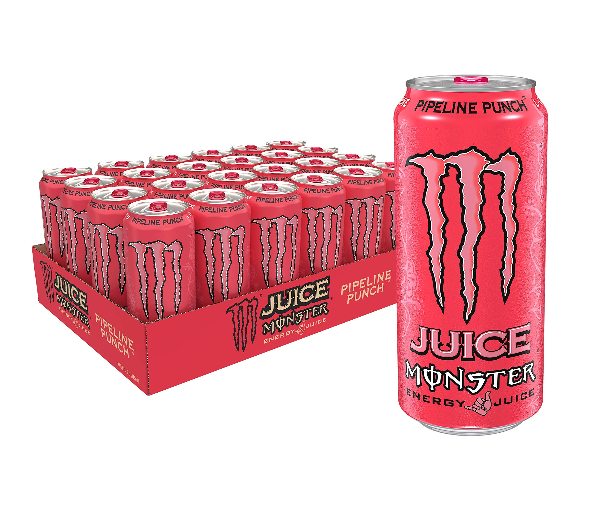

Igelkotten reviews
[Take a look into MansyS belongings] Updated: March. 14th 2025
(ONGOING)

Igelkotten56
They be letting everyone do a monster review nowadays
- MansyS last words before Igelkotten56 shot him in his skull
Igelkotten56 told me that he was heavily inspired by Espster reviews so we'll see how this plays out.

Published: March 13th 2025
Monster Energy Juiced Aussie Style Lemonade (Review)
As the name suggests, it tastes like lemonade, lemon flavor a little sour, a little sweet with a slightly chemical taste. I've never really understood what the term "fresh" means but I think it fits this one. It's the first monster I've tasted so it's hard to give it a review but I've tasted other energy drinks and this is one of the better ones. Something disturbing I discovered after drinking it was that my pee was green, I mean what on earth makes it green, the drink itself is yellow, have they put radioactive substances in the drink? That aside, the design of the can is very nice and peaceful, it truly makes it pop with the ocean theme. Without looking into it too far I will summarize: My oh my is it as much of a treat for the eyes as the mouth. Warning causes green pee.
8/10

Published: March 14th 2025
Monster Energy Lewis Hamilton Zero Sugar (Review)
Now we have a monster collab. Let me tell you the taste is not what you would expect from the purple, blue and green can design. It tastes like peach and it's very sweet. The sweetness makes it a little tiring towards the end but maybe that's just me personally, still good. The can design is quite nice but i've seen better, after all monster has the best can designs in my opinion. BUT the design is very off putting considering that it tastes like peaches an orange fruit yet orange is nowhere to be found on the can. Weird things have happened when I drink monster as you know GREEN PEE. It happened again HOW but I must say it's more or less a thing I'm laughing about rather than being scared of and I guess that's how it will be in the future. If you look behind the frontside of the can you can see the description where it says “this formula will have you ready for anything” but i was not ready looking down the toilet even though it happened before. My instinct is telling me to not drink monsters but looking back I remember Blaz saying that it happens and he's fine right?
6/10

Published: March 20th 2025
Monster Energy Ultra Peachy Keen (Review)
Yes, another peach one, boring, maybe but a great opportunity to make a comparison between this one and lewis hamilton. But before that some thoughts about some things. First of all espsters last review, there is no way i could compare to that, like just how many words were there. Also i was planning on trying every monster flavor but don't be surprised if i skip ultra rósa. I'm impressed, you need a lot to make reviews like that. The patience, the perseverance, the tenacity, the absolutely traumatising experience to turn into a flower and last but not least THE MONEY. Monster ain't cheap but i'd say that if they got a rating over 5 they are worth trying at least once which is 100% of my ratings for now. Second of all, I realised that the can had some sort of texture to it that the previous ones didn't have but I do know some others do as well. I wonder why some do and some don't and its purpose, is it just so that it feels good holding it? Third of all, the description says “So don't take our word for it, check it out yourself ‘cause it's all good when you're sippin’ ultra peachy keen” Hard not to agree, It's good and when you drink it your mood becomes too. Comparison time let's break it down. Taste: Not much of a difference really, they kinda taste the same, maybe a very minimal difference although the more noticeable thing is the sweetness, Ultra peachy keen is less sweet and in this case something i prefer, it makes it more “refreshing” i believe. Ultra peachy keen wins the taste. Can design: Ultra peachy keen’s can has a nice vibe but it isn't the best. Lewis hamilton looks amazing and I think I've grown to like it more, for shure better than ultra peachy keen but I must say that color compared to taste is much better for ultra peachy keen. Lewis hamilton still wins can design. Radioactive substances: First this isn't something I like so you don't get the wrong idea. Lewis hamilton: Green pee. Ultra peachy keen: No green pee, Epic. Ultra peachy keen wins. I believe taste is the most important factor and therefore I think Ultra peachy keen wins overall. But hey always remember, don't take my word for it, check it out yourself cause it's all good when you're sippin’ ultra peachy keen.
7/10

Published: March 28th 2025
Monster Energy Juice Pipeline Punch (Review)
The reason I picked this one is because it's the number 1 spot on some review I checked on the internet. Now, is it my number 1 too? NO. I thought it could be a 10/10 but not this time. I hope it will happen sooner or later. Even the description says it will be legendary so no wonder I had high expectations for this one. Also i have something to say about espsters last review. Espster I know what you did, you ain’t slick, I never saw it coming but I know what you did. Copying my idéa. But i guess there is no need for apologies since i copied you making monster reviews in the first place. Back to the monster, it's good but it didn't meet my expectations. It tastes like exotic fruits like oranges and passion fruit so if you like drinks that taste that way then you are going to like this one. I would say it has the same vibe as Fanta exotic but it doesn't taste quite the same. Unfortunately I think pipeline punch is a downgrade. Now for the rating.
7/10
Published: April 1st 2025 (April fools)
Monster Energy Juice Rio Punch (Review)
No way, I thought it was gonna be good but this was absolutely amazing.
It is the best monster i've tasted and not only that it’s easily one of my top 3 drinks of all time. I like exotic drinks like this one but unlike Pipeline punch and Fanta exotic for example, this one is built different. It has the same feeling as the first day of summer vacation, when you know that there is no school for weeks and lots of good memories ahead. The nostalgic feeling of playing lego star wars on the ps2. The feeling of getting hit by a scooter on the shin. Nah maybe not that last one. Honestly there is nothing more to say, go try it yourself.
10/10
Published: April 2nd 2025
Monster Energy Juice Rio Punch (Review)
If you are confused about this then you clearly didn't check the release date on the last one. Get fooled. The funny thing is that this isn't even close to being a 10/10.
Rio punch hits you like a punch when you take the first sip. And not even the good type of punch that makes you wake up, get up and get out there. No this punch is the painful type unfortunately. Before we get to the bad stuff I will say that the can design is definitely the best part. It gives a really nice tropical vibe and it's one of the best monster designs i've seen, like for real the person who made it deserves a raise. This drink is a trap to make people hopeful seeing the colorful design tempting you to take a first sip and then mercilessly turning around your experience. Imagine hearing a thousand small voices getting their hopes and dreams crushed. YOU’RE NEXT. You take a sip. At first it feels confusing, not good nor bad, it’s this confusing feeling that makes you curious to keep on going. It feels exotic. No… what is it… Is it candy? But it doesn't feel quite that way either. Chemical? maybe. THEN it’s only a matter of time before you realize that you are crawling right down a rabbit hole and it only keeps on getting worse. The drink is against you. And after a long time it finally stops. Leaving your soulless body behind still wondering. The colorful can, the good reviews, the description that says it does it big and those positive reviews. Liars. That's how my experience was, and I promise you it was 100% as dramatic as I wrote. Yeah, the can even grew out an arm just to punch me and live up to its name. That aside I would describe the taste as a mix between some fruit flavor and that weird energy drink chemical flavor and lastly candy. ya know its in redbull for example. I really don't like the candy flavor in drinks and it tends to make the drinks mid. On top of that, some candy are worse than others and in the whole candy flavor spectrum I can confidently say it's a bad one. Now if any candy flavor makes the drink mid, what does a bad one at that make it? Worse than most red bull flavors. Anyways, that mystery fruity flavor, I think it's citrus but I'm not sure and there is probably some other exotic fruit mixed in as well. So yeah rio punch is not good, I wouldnt say its terrible but definitely not good.
3/10

Published: April 5th 2025
Monster Energy Ultra Black (Review)
What exactly am I feeding myself at this point? Monster ultra black, sounds like a damn stealth bomber model. The monster ultra back is a stealth plane in the US military newly engineered for high speed stealth bombing that can fly at speeds of up to mach three and is equipped with stealth radar jammers and a load of 50 megatons worth of tnt. Buy one now for only 500,000,000,000,000,000 USD to serve your country. Anyways i think that it's about time to explain how my reviews work so i don't get comments filled with all your wrath and anger if or whenever that gets added.Theese are personal ratings of my experience, I have not made any research to find out which one is truly the greatest regarding science and shit, who do you think i am. So if you don't like my reviews just read epsters reviews because those are 100% factual. Here are the scores: 1/10= Terrible and undrinkable stuff. 2/10= Very bad, absolutely do not drink this. 3/10= Bad on the worse side, just dont drink this either. 4/10= Bad on the better side, bad but has some good elements. 5/10= Mid, not bad but not something i would recommend. 6/10= Good on the worse side, good enough to be good but no more. 7/10= Good on the better side, this is the stuff you would drink again. 8/10= Very good, an excellent option. 9/10= Amazing, AKA fire. 10/10= Peak, here are the drinks that you can’t see being beaten. Anyways Like I said before, I recommend you try the ones with a score of 6 or higher. Why? you might ask, and i will tell you. Monster is truly a great series of drinks and if I think it's good then I believe that you may possibly think it is amazing. Monster truly does have an impact on your life, whether it's giving you energy or giving an unique taste experience and that is why i will recommend them. Now I have to say that my ratings are based on other drinks, both energy drinks and sodas, not only comparisons between monsters. These reviews I'm making aren't only reviews, it is also a journey for me tasting new monsters. I hope nobody will dislike how my scores work but if you do, I don't care. Back to the monster. You could say that Monster ultra black tastes like cherry lemonade, sounds crazy but it does. It has a mild cherry flavor with a sour lemony taste. It's not that sweet and the sour makes it seem not sweet at all. So i guess that it doesn't taste much except for the sour, now i like sour stuff but i mean that isn't magically gonna make it taste more and better. Also one thing I want to change is the fact that the can isn’t ultra black. Imagine a totally black can that would be awesome right. Although I think it makes sense for it to have red details because it tastes like cherries. So yeah ultra black is not bad but not something i would recommend.
5/10

Published: May 14th 2025
Monster Energy The Doctor (Review)
Now we have another monster collab. Before I say stuff about this one I have to say that I unfortunately have no more ideas of what lyrics from a Persona song to sneak in. I mean there is no way that you missed that am i right? Anyways the monster tastes like mandarin, yes specifically mandarin.https://www.youtube.com/watch?v=ZNGqBDRJgvo
That’s pretty much it for what it tastes like but it is also a bit bitter. The bitter taste is mostly what makes me dislike it, well not the bitterness itself but the bitter and weird aftertaste. Now I also have to say that the can design is a little basic, still not bad.
Whether the doctor tastes like medicine or not is up to you. No nevermind don’t try it.
4/10